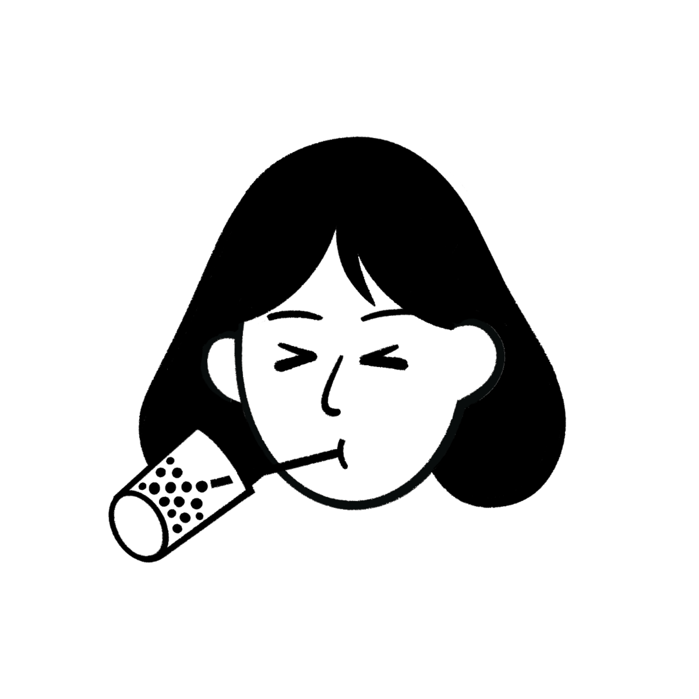

JLPT N1 學習教材
2026年4月8日｜人の性格語彙 ＋ こそ文法
N1
🔍 正在偵測日文語音…
📖
PART 1｜人の性格・個性を表す言葉（全50語）
✅ 良い意味（33語）
愛想がいい
あいそがいい
友善、和藹可親
愛想（好感）→讓人覺得你好相處
センスがいい
センスがいい
有品味、有時尚感
英文 sense，感覺很時髦
気立てがいい
きだてがいい
性情好、個性好
気立て＝天生心地→天生的好性格
いさぎよい
いさぎよい
乾脆、光明磊落
不拖泥帶水，敢於承擔責任
情け深い
なさけぶかい
富同情心、有人情味
情け＝人情、憐憫之心
用心深い
ようじんぶかい
謹慎、小心翼翼
用心（注意）深→凡事都很謹慎
りりしい
りりしい
英姿颯爽
多用於外表或態度帶來的氣勢感
若々しい
わかわかしい
充滿活力、顯年輕
若い重疊強調→非常年輕有活力
勇ましい
いさましい
勇敢、英勇
勇（勇）+ましい→充滿勇氣
たくましい
たくましい
強壯、有韌性
身心都強壯，不只是體格
思いやりがある
おもいやりがある
體貼、為他人著想
思いやり＝換位思考、體貼之心
気品がある
きひんがある
有氣質、高雅
気品（品格）→舉手投足有格調
色気がある
いろけがある
有魅力、有性感氣質
色気＝魅力、嫵媚感
しとやかな
しとやかな
溫柔嫻靜、端莊
多用於女性，動作輕柔優雅
チャーミングな
チャーミングな
迷人、魅力十足
英文 charming 外來語
まめな
まめな
勤勞認真、做事細心
原義是小豆子→小而紮實→做事仔細
生真面目な
きまじめな
一板一眼、過度認真
生（raw）+真面目→認真過頭，可正可負
勤勉な
きんべんな
勤奮用功
勤+勉，漢字直接，語感同中文
誠実な
せいじつな
誠實、真誠
漢字同中文，語感一致
まともな
まともな
正經、正常、像樣
走正道，不偏離常軌
大柄な
おおがらな
體格高大、花紋大
大+柄（體型）→高大的體格
小柄な
こがらな
身材嬌小
小+柄，與大柄な相對
活発な
かっぱつな
活潑、積極
漢字同中文，活力十足
有望な
ゆうぼうな
有前途、有希望
漢字同中文，語感一致
純朴な
じゅんぼくな
純樸、老實
純+朴，比 純粋 更強調自然不做作
無邪気な
むじゃきな
天真無邪
無+邪気（壞心思）→沒有算計
温和な
おんわな
溫和、和氣
漢字同中文，語感一致
気さくな
きさくな
隨和、沒架子
讓人覺得自在，不擺架子
おおらかな
おおらかな
豁達、開朗
海闊天空的感覺，不計小節
素朴な
そぼくな
樸素、質樸
強調自然不做作，比 純朴 更偏外表
デリケートな
デリケートな
纖細敏感、細心
英文 delicate 外來語
物好きな
ものずきな
好奇心強、什麼都想試
物（事物）+好き→好奇心旺盛
無口な
むくちな
沉默寡言、話不多
無+口→不多說話，可正可負
❌ 悪い意味（17語）
気まぐれな
きまぐれな
善變、任性
気+紛れ（分心）→心情飄忽不定
近寄りがたい
ちかよりがたい
難以親近、令人望而生畏
近寄る（靠近）+難い→讓人不敢靠近
陰気な
いんきな
陰沉、氣氛壓抑
陰+気（氣）→帶來負面氣場
孤独な
こどくな
孤獨、孤立
漢字同中文，語感一致
臆病な
おくびょうな
膽小、懦弱
臆（心縮）+病→因為恐懼而畏縮
なれなれしい
なれなれしい
過度親近、沒分寸
慣れ慣れ→太習慣了→缺乏禮貌距離
いやらしい
いやらしい
下流、猥瑣、令人不舒服
比 いやしい 更偏性意味或讓人噁心的感覺
卑しい
いやしい
貪婪、下賤、卑鄙
身份低賤或品格低劣
しぶとい
しぶとい
頑固、死纏爛打
不輕易放棄，但帶有負面的「黏人」感
荒っぽい
あらっぽい
粗暴、魯莽
荒（粗）+っぽい（有點）→行事粗魯
金遣いが荒い
かねづかいがあらい
花錢大手大腳、揮霍
金遣い（用錢方式）+荒い（粗）→亂花錢
おせっかいな
おせっかいな
多管閒事、愛管別人
お+節介（多餘的關心）→超出範圍的介入
おっちょこちょいな
おっちょこちょいな
毛毛躁躁、冒失鬼
發音本身就很慌亂，粗心大意的感覺
でしゃばりな
でしゃばりな
愛出風頭、多管閒事
出る+邪魔→硬要插進來
きざな
きざな
裝模作樣、自以為是
帶著一種刻意表演的油膩感
ルーズな
ルーズな
散漫、不守時
英文 loose 的外來語
無礼な
ぶれいな
無禮、失禮
漢字同中文，語感一致
✏️
PART 2｜こそ 文法の四つのパターン
PATTERN 01
Vてこそ
動詞て形 ＋ こそ
唯有⋯才能⋯｜強調「做了這件事，後面的結果才能成立」
親になってこそ、子育ての大変さがわかる。
唯有成為父母，才能真正理解育兒的辛苦。
PATTERN 02
Nこそあれ
名詞 ＋ こそあれ
雖然有⋯但⋯｜承認某個負面狀況，後面話鋒一轉（≈ はあるけれど）
苦労こそあれ、仕事にやりがいを感じる。
雖然辛苦，但工作很有意義。
PATTERN 03
Vこそすれ
動詞基本形 ＋ こそすれ
只會⋯，絕不會⋯｜強烈否定反方向（語氣很強）
感謝こそすれ、文句なんてありません。
只有感謝，絕不會有任何抱怨。
PATTERN 04
Nこそ〜が／けれど
名詞 ＋ こそ ＋ 〜が
⋯雖然⋯但⋯｜先讓步再反轉，こそ讓讓步語氣更強
見た目こそ悪いが、味はとてもいい。
外觀雖然不好看，但味道非常棒。
🎭
PART 3｜今日の語彙と文法を使った情境劇
同じ登場人物・同じ職場での出来事。
緑
は語彙・
青
は文法
📍 場面一：お昼休み、同僚との会話
Vてこそ
▶ 全部播放
佐藤
ねえ、新しく来た山田さんって、どんな人だと思う？
田中
正直、最初は
気難しい
人かと思ったよ。あんまり笑わないし。
佐藤
でも一緒に働い
てこそ
、その人の本当の良さってわかるじゃない？
田中
それはそうだね。実際に話してみたら
気さく
で、しかも仕事は
几帳面
だし、見直したよ。
「一緒に働いてこそ」＝唯有一起工作過，才能了解一個人。前面是必要條件，後面是才能得到的事。
📍 場面二：午後、プロジェクトの話
こそあれ／こそすれ
▶ 全部播放
木村
山田さん、今日のプレゼン大変そうだったね。
佐藤
苦労こそあれ
、あの人は
粘り強い
から絶対諦めないよ。
木村
でも隣の鈴木さんって
でしゃばり
で、邪魔してくるよね。
田中
山田さんは
感謝こそすれ
、絶対文句言わないと思う。
情け深い
から。
「こそあれ」は転折（雖然⋯）、「こそすれ」は強い否定（只會⋯絕不會⋯）。兩個こそ、語氣不同！
📍 場面三：帰り際、鈴木の話に
Nこそ〜が／てこそ
▶ 全部播放
田中
そういえば、鈴木さんって
見た目こそ
頼りなさそうだけど、実はかなり
たくましい
らしいよ。
佐藤
え、意外。いつも
ルーズ
で
軽率
なイメージしかなかった。
木村
人って外見じゃわからないね。
純粋
に仕事が好きなんだって。
田中
社会に出
てこそ
見えてくるものがあるよね。
気さく
かどうかも、一緒に働い
てこそ
わかるし。
「見た目こそ〜が」＝外觀雖然⋯但⋯。こそ讓讓步的語氣更強，比單純的「は〜が」更有強調感。